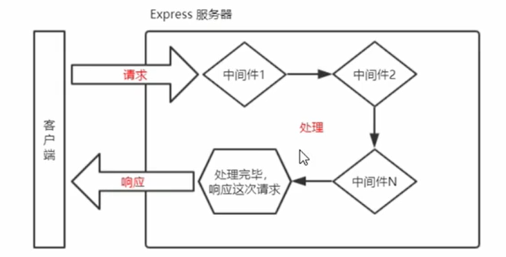

Node.js-express中间件
业务流程的中间处理环节
中间件的调用流程
当一个请求到达Express的服务器之后，可以连续调用多个中间件，从而对这次请求进行预处理。

中间件的格式
express的中间件本质上就是一个function处理函数，express中间件的格式如下
1 | app.get('/',function(req,res，next){ next() }) |
next函数的作用
next函数是实现多个中间件连续调用的关键，它表示把流转关系转交给下一个中间件或路由。
定义中间件函数
1 | //常量nw所指向的就是中间件函数 |
全局生效的中间件
客户端发起的任何请求，到达服务器之后，都会触发的中间件，叫做全局生效的中间件。
通过调用app.use(中间件函数)，即可定义一个全局生效的中间件，示例代码如下:
1 | const mw = function(req,res,next){ |
简化形式：
1 | app.use(function(req,res,next){ |
中间件的作用
多个中间件之间，共享同一份req和res。基于这样的特性，我们可以在上游的中间件中，统一为req或res 对象添加自定义的属性或方法，供下游的中间件或路由进行使用。
1 | //中间件的作用 |
定义对个全局中间件
可以使用app.use()连续定义多个全局中间件。客户端请求到达服务器之后，会按照中间件定义的先后顺序依次进行调用。示例代码如下:
1 | const express = require("express") |
局部生效的中间件
不使用app.use(定义的中间件，叫做局部生效的中间件，示例代码如下:
1 | //定义中间件函数mw1 |
使用多个局部生效的中间件
1 | //以下两种写法是""完全等价""的，可根据自己的喜好，选择任意一种方式进行使用 |
中间件使用的注意事项
- 一定要在路由之前注册中间件
- 客户端发送过来的请求，可以连续调用多个中间件进行处理
- 执行完中间件的业务代码之后，不要忘记调用next(函数
- 为了防止代码逻辑混乱，调用next()函数后不要再写额外的代码
- 连续调用多个中间件时，多个中间件之间，共享req和res对象
中间件的分类
应用级别的中间件：通过app.use()或app.get()或 app.post()，绑定到app实例上的中间件
1
2
3
4
5
6app.use(function(req,res,next){
next()
})
app.get('/',mw1,function(req. res) {
res.send('Home page.')
)}路由级别的中间件：绑定到 express.Router()实例上的中间件，叫做路由级别的中间件。它的用法和应用级别中间件没有任何区别。只不过，应用级别中间件是绑定到 app实例上，路由级别中间件绑定到 router实例上，代码示例如下:
1
2
3
4
5
6
7
8const express = require("express")
const app = express()
const router = express.Router();
router.use(function(req,res,next){
next()
})
app.use('\',router)错误级别的中间件：错误级别中间件的作用:专门用来捕获整个项目中发生的异常错误，从而防止项目异常崩溃的问题。格式:错误级别中间件的 function处理函数中，必须有4个形参，形参顺序从前到后，分别是(err, req, res, next)。
1
2
3
4
5
6
7
8
9
10
11
12app.get( " 7 " , function (req, res) //路由
throw new Error("服务器内部发生了错误!')
//抛出一个自定义的错误
res.send("Home Page.")
})
app.use(function (err, req,res,next)
//错误极别的十间件
console.log( '发生了错误:" +err.message)
//在服务器打H错设消息
res.send( "Error! ' +err.message)
})
//向客户端响应错误相关的内容Express内置的中间件：自Express 4.16.0版本开始，Express 内置了3个常用的中间件，极大的提高了Express项目的开发效率和体验
1.express.static快速托管静态资源的内置中间件，例如:HTML文件、图片、CSS样式等（无兼容性)
2.express.json解析JSON格式的请求体数据（有兼容性，仅在4.16.0+版本中可用)
3.express.urlencoded解析URL-encoded格式的请求体数据（有兼容性，仅在4.16.0+版本中可用)
1
2
3
4//配置解析application/json格式数据的内置中问件
app.use(express.json())
//配置解析 application/x-wow-form-urlencoded格式数署的内置中间件
app.use(express.urlencoded({extended:false}))1
2
3
4
5
6
7
8
9
10
11
12
13
14
15
16
17
18
19
20
21const express = require("express")
const app = express()
//注意:除了错误级别的中间件，其他的中间件，必须在路由之前进行配置
app.use(express.json())
//解析表单中的url-encoded格式数据
app.use(express.urlencoded({extended:false}))
app.post('/user',(req,res)=>{
//在服务器，可以使用 req.body 这个属性，来接收客户端发送过来的请求体数据
//默认情况下，如果不配置解析表单数据的中间件，则req.body 默认等于undefined
console.log(req.body)
res.send("user page")
})
app.post('/book',(req,res)=>{
//在服务器，可以使用 req.body 这个属性，来接收客户端发送过来的请求体数据
//默认情况下，如果不配置解析表单数据的中间件，则req.body 默认等于undefined
console.log(req.body)
res.send("user page")
})
app.listen(80,() => {
console.log("http://127.0.0.1")
})第三方的中间件：非Express 官方内置的，而是由第三方开发出来的中间件，叫做第三方中间件。在项目中，大家可以按需下载并配置第三方中间件，从而提高项目的开发效率。
1.运行npm install body-parser安装中间件
2.使用require 导入中间件
3.调用app.use0注册并使用中间件
Express内置的 express.urlencoded中间件，就是基于body-parser这个第三方中间件进一步封装出来的。
自定义中间件
自己手动模拟一个类似于express.urlencoded 这样的中间件，来解析 POST提交到服务器的表单数据。
定义中间件：
1
2
3app.use(function(req,res,next){
//中间件的业务逻辑
})监听req的data事件：在中间件中，需要监听req对象的data事件，来获取客户端发送到服务器的数据。
如果数据量比较大，无法、次性发送完毕，则客户镐会把数据切割后，分批发送到服务器。所以data事件可能会触发多次，每一次触发data事件时，获取到数据只是完整数据的一部分，需要手动对接收到的数据进行拼接。
1
2
3
4
5
6
7//定义会量，用来存情储名户这发试过来的清求体数据
let str = ''
//监听req对象的data事件(客户实发试过来的新的请求体数据)
req.on('data',(chunk) => {
// 拼接请求体数据，隐式转换为字符串
str += chunk
})监听req 的end事件：当请求体数据接收完毕之后，会自动触发req的end 事件。
因此，我们可以在req的end事件中，拿到并处理完整的请求体数据。示例代码如下:
1
2
3
4
5
6
7//监听req对象的end事件(请求体发送完毕后自动触发)
req.on('end',() => {
//打印完整的请求体数据
console.log(str)
// TODO:把字符串格式的请求体数据。解析成对象格式
})使用querystring模块解析请求体数据：Node.js 内置了一个querystring 模块，专门用来处理查询字符串。通过这个模块提供的parse()函数，可以轻松把查询字符串，解析成对象的格式。示例代码如下:
1
2
3
4//导入处理querystring的Node.js内置模块
const qs = require("querystring")
//调用qs.parse()方法，把查询宁符串解析为对象
const body = qs.parse(str)将解析出来的数据对象挂载为req.body：上游的中间件和下游的中间件及路由之间，共享同一份req和res。因此，我们可以将解析出来的数据，挂载为req的自定义属性，命名为req.body，供下游使用。示例代码如下:
1
2
3
4
5req.on('end',() => {
const body = qs.parse(str) //调用qs.parse()方法。把查询字符串解析为对象
req.body = body //将解析出来的请求体对象，挂载为req.body属性
next() // 最后，一定要调用next()函数。执行后续的业务逻辑
})将自定义中间件封装为模块：为了优化代码的结构，我们可以把自定义的中间件函数，封装为独立的模块，示例代码如下:
1
2
3
4
5
6
7
8//custom-body-parser.js模块中的代码
const s = require('querystring')
function bodyParser(req,res，next) {/*省略其它代码*/ }
module.exports = bodyParser //向外导出解析请求体数据的中间件函数
//导入自定义的中问件模块
const myBodyParser = require('custom-body-parser')
//注册自定义的中间件模块
app.use(myBodyParser)